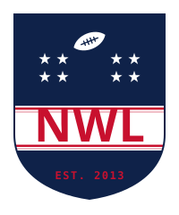

Thirteen years of rivalries, dynasties, and legendary collapses — every game, every record, every ounce of glory.
Matchups, standings, power rankings, and commentary for the current season →
League records, head-to-head history, and a year-by-year reference.
Every manager, past and present — career stats, top picks, and biggest moves.
Every unique final score in league history — and how many times it's happened.
Scoring-adjusted leaderboard. Accounts for the years scoring rules changed, so eras compare fairly.
Every pick since 2013, browsable by year or by manager. Includes round-by-round strategy trends.
Every waiver win, waiver loss, free agent grab, and trade — filterable by year or manager.